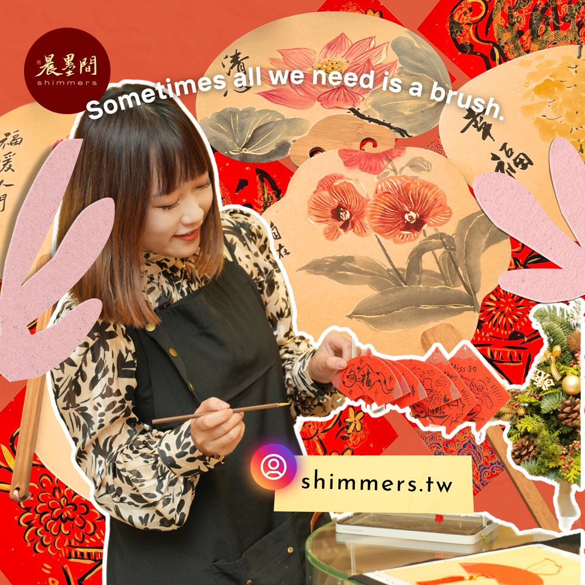
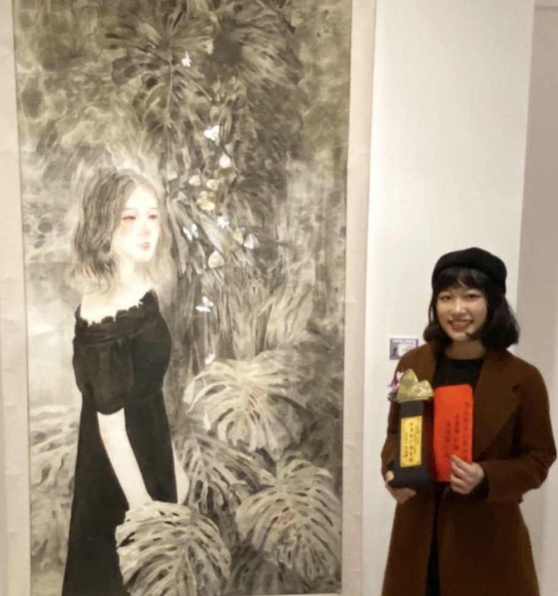
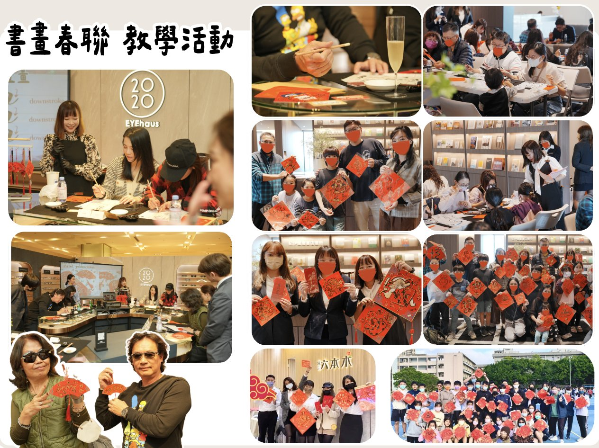
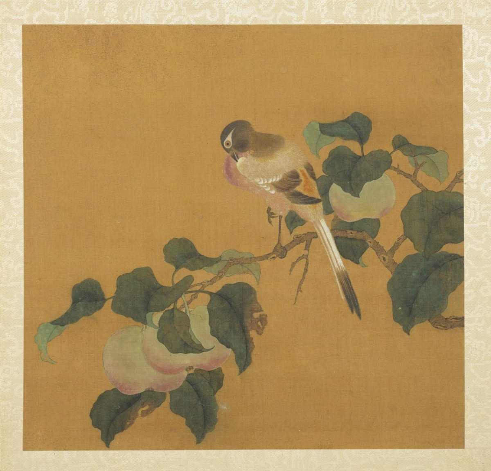
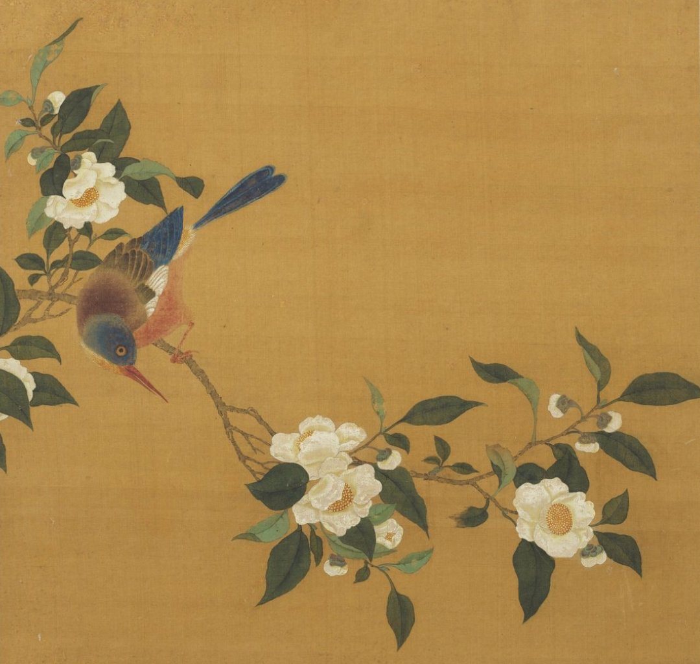
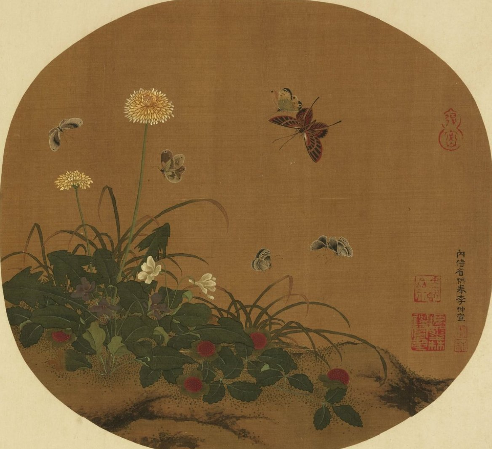

先上一期共同的筆墨基礎，再依喜好選工筆或寫意，也可以兩條一起修。每期 8 堂，每堂 3 小時，以結業作品評估升階。
先用吉祥書畫小品練控墨與墨分五色，再選工筆宋代花鳥或寫意花卉。
動物的絲毛與一筆成形，人物的白描、開臉與潑墨。
小品創作指導：畫給居家空間展示，或作為藝術訂製贈禮。
細線勾勒、層層分染。適合喜歡細節、享受慢慢堆疊顏色的人。
一筆到位、墨色交融。適合喜歡筆觸痛快、追求氣韻的人。

在畫室長大，從小拿毛筆、磨墨。一路從臺南二中美術班、國立臺灣師範大學美術系到國立成功大學，創作橫跨水墨、工筆、書法與油畫。作品入選東京國際水墨畫展，並獲南投玉山美術獎水墨膠彩類全國首獎，由文化局典藏。
長年為企業設計書畫貴賓贈禮、帶領春聯與團扇工作坊，相信每個大人都能在一支筆、一滴墨裡，找到安靜下來的時間。


每堂完成一件小品書畫，當堂帶走。控墨與墨分五色，就練在每一件作品裡。
以宋人團扇作臨本，一期完成1-2件，
以台北故宮展品為主。
荷、牡丹、紫藤、蔬果，學習花青、赭石、胭脂與墨的調和
連年有餘｜荷葉潑墨、荷花勾瓣
吉祥如意、富貴長春、家和萬事興 福滿堂、春風得意、平安喜樂
冊頁與團扇多在 25 公分見方上下，一期可完成一到兩件。第一堂依程度與喜好，和老師一起選定臨本。



鳥羽分區、乾筆絲毛、毛流方向。臨本：李安忠〈竹鳩圖〉、〈野卉秋鶉〉，宋人〈富貴花狸圖〉。
小雞、雀鳥、魚、蝦、蟹，幾筆寫出形體。參考八大山人與齊白石。
高古游絲描、鐵線描，仕女開臉與服飾設色。前半期臨台北故宮唐人〈宮樂圖〉局部，後半期參考何家英的當代工筆人物，完成一幅自己的人物小品。
速寫、減筆、潑墨衣紋與彩墨人像。臨本：當代寫意人物任選。
高階課程以小品創作指導為主，8堂完成一件精緻小作品，作品用於居家空間展示，或作為藝術訂製贈禮送給重要的人。
準備投件美展的學員，可另外申請年度制的「競賽・大全開作品指導」專案，另案報價。
以 90×180 公分大全開作品投件美展：選展與歷屆作品研究、構圖與放大稿、分區製作、一對一評圖，到裝裱、攝影與送件全程陪跑。依作品內容與時程個別報價。
可評估美展：台南美術展、高雄獎、大墩美展、桃源美展、磺溪美展、玉山美術獎、全國美術展覽會（規格依當年簡章為準）
期課75折優惠 $9000（原價＄12000） 每期8堂課，共24小時（期課課程為每週至少一堂，需於第一堂課到第八堂課結束前上完，請假亦提供line預約週兼任一上課時段補課）
基礎課程學費包含共用材料用具費用。
進階、高階課程不包含個人材料費用，可請老師代為採購。
手把手逐步教學，可以選擇讓老師改畫或維持自己的畫面進程。